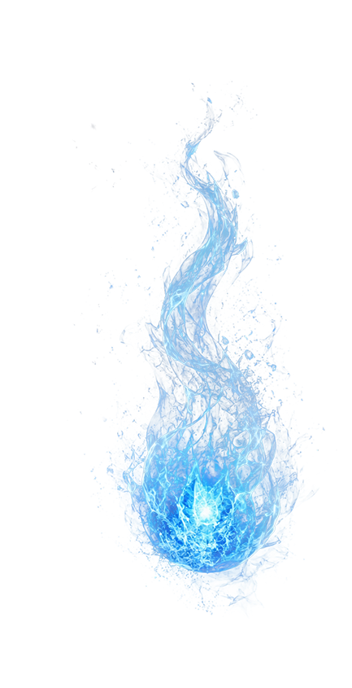

NOW, YOU DECIDE WHAT SURVIVES.

PLAYER 1
Collect Matter /
Fire particles
Fire particles

PLAYER 2
Collect Antimatter /
Ice particles
Ice particles
SCAN TO PLAY
Two players have 30 seconds to collect particles around the installation.